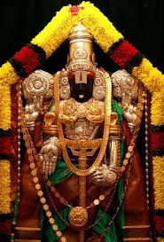

this is home page
back
Mail

Konidela Kalyan Babu,[4] better known by his stage name Pawan Kalyan, is an Indian film actor, producer, director, screenwriter, writer, philanthropist and politician. His film works are predominantly in Telugu cinema. He is the youngest brother of popular actor Chiranjeevi . Kalyan made his acting debut in the 1996 Telugu film Akkada Ammayi Ikkada Abbayi. In 1998, he starred in Tholi Prema, which won the National Film Award for Best Feature Film in Telugu for that year.